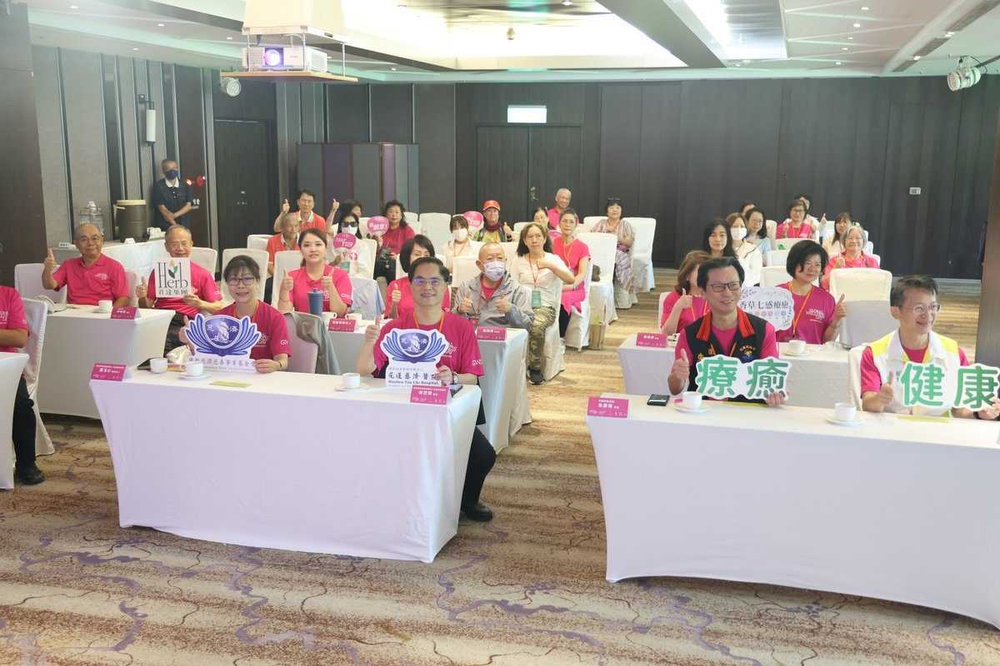
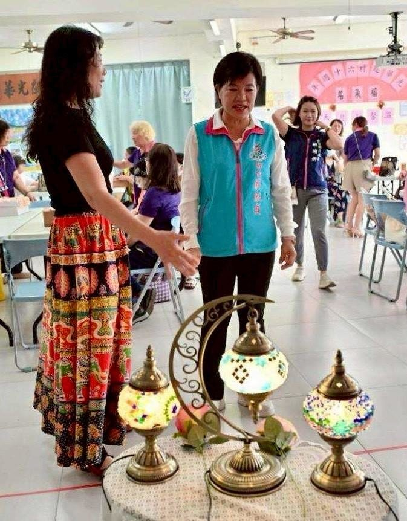
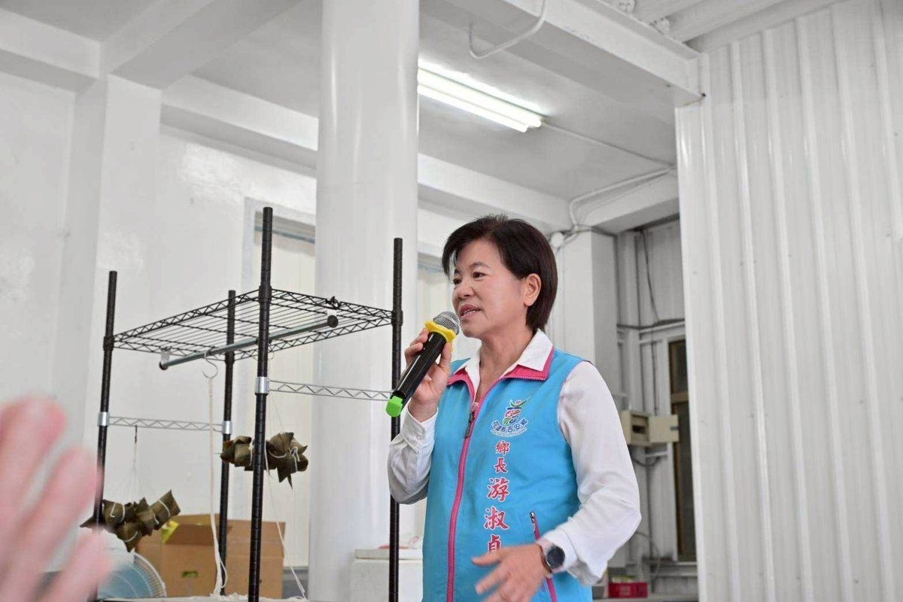
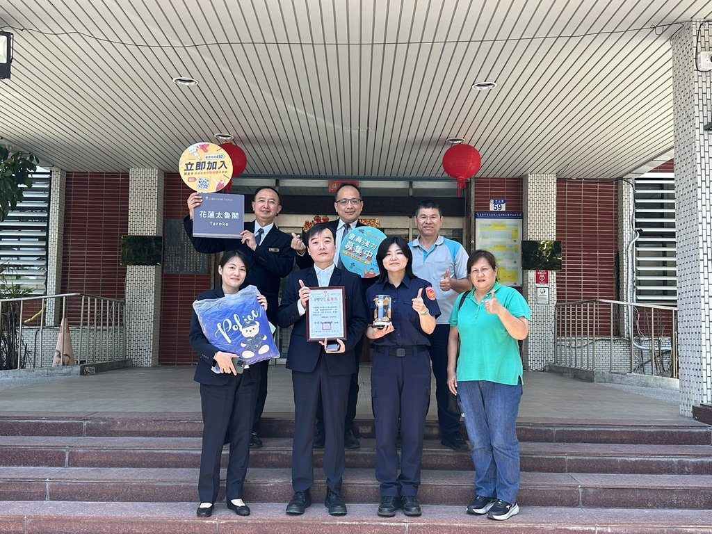
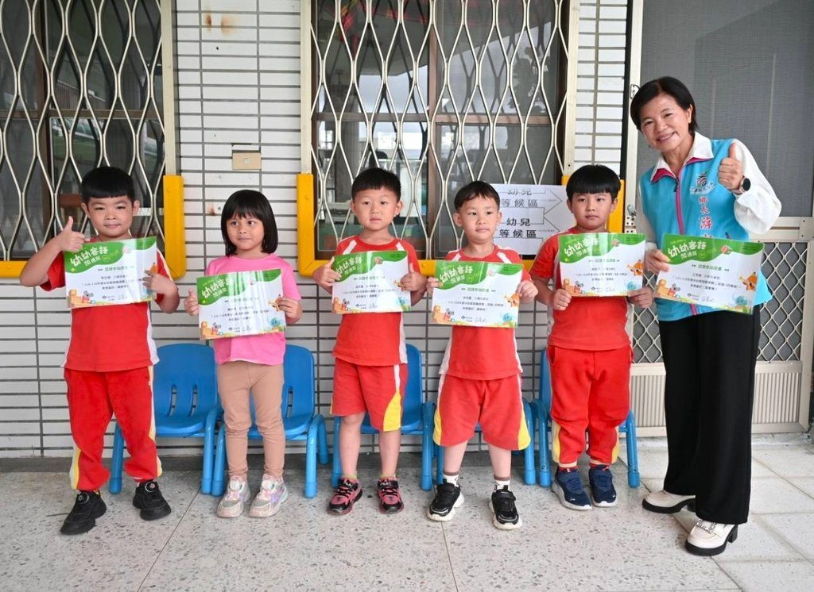

花蓮推動東區全人轉型照護計畫，實現全民健康治理
可樂電子報小編/編輯 為延續賴清德總統對全民健康的承諾與落實「健康台灣」的願景，健保 […]…
閱讀全文 →可樂電子報小編/編輯 為延續賴清德總統對全民健康的承諾與落實「健康台灣」的願景，健保 […]…
閱讀全文 →
可樂電子報小編/編輯 花蓮縣警察局新城分局和平所警員張英展執行勤區查察勤務時，發現一名 […]…
閱讀全文 →
可樂電子報小編/編輯 吉安鄉公所於16日下午於親民堂辦理『115年度巡守隊、義消、義 […]…
閱讀全文 →
可樂電子報小編/編輯 為支持花蓮偏鄉教育與學生多元發展，國際獅子會300A-3區於13 […]…
閱讀全文 →
可樂電子報小編/編輯 吉安鄉在客家委員會「客語為通行語計畫」評比中脫穎而出，獲得114 […]…
閱讀全文 →
可樂電子報小編/編輯 79歲的蕭伯伯原患有慢性阻塞性肺病（COPD），今年5月初因感 […]…
閱讀全文 →
東部地區老年人口比例居全台之冠，花蓮縣65歲以上人口達21.52%。為因應超高齡社會挑 […]…
閱讀全文 →
可樂電子報小編/編輯 吉安鄉19個原住民部落的年度捕魚祭（Milaedis）已於14日 […]…
閱讀全文 →
乳癌為臺灣女性發生率第1位的癌症，為達成「健康台灣」2030年降低癌症死亡率願景，花蓮 […]…
閱讀全文 →
可樂電子報小編/編輯 花蓮慈濟醫學中心舉辦「慈醫365．健康又幸福」系列講座，分享「六 […]…
閱讀全文 →
可樂電子報小編/編輯 端午佳節將至，為傳承在地文化底蘊並增進家庭情感，吉安鄉公所與吉安 […]…
閱讀全文 →
可樂電子報小編/編輯 吉安鄉公所為了提升社區關懷照護能量，於吉安國小活動中心舉辦了「有 […]…
閱讀全文 →
可樂電子報小編/編輯 為響應2026全球健康日（Global Wellness Day […]…
閱讀全文 →
可樂電子報小編/編輯 吉安鄉公所與吉安鄉農會攜手合作，於光華村活動中心共同舉辦「幸福農 […]…
閱讀全文 →
可樂電子報小編/編輯 【吉安鄉訊】為傳承臺灣傳統節慶飲食文化，並積極促進長者社會參與， […]…
閱讀全文 →可樂電子報小編/編輯 位於越南河內市的中央兒童醫院近日由副院長帶隊，拜會花蓮慈濟醫院， […]…
閱讀全文 →
可樂電子報小編/編輯 隨著全球高齡化加速，巴金森氏症及阿茲海默症等神經退化性疾病愈發普 […]…
閱讀全文 →
可樂電子報小編/編輯 一年一度的警察節即將到來，新城分局長賴楷淳結合在地企業資源，攜手 […]…
閱讀全文 →
可樂電子報小編/編輯 日前新城警分局合歡所警員白庭嘉接獲報案，稱在合歡山旅客服務中心內 […]…
閱讀全文 →
可樂電子報小編/編輯 吉安鄉立幼兒園 Recently 舉辦了一場特殊的活動，叫做「 […]…
閱讀全文 →